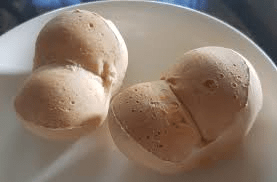

Monay Bread
Monay is a popular Filipino bread known for its dense texture and slightly
sweet, milky flavor. It is perfect for breakfast or merienda with a cup of
coffee or ice-cold juice.
Ingredients:
Bread Flour
Milk powder
Sugar
Salt
Lukewarm water
Instant Yeast
Unsalted Butter
Egg
Milk
Instructions:
-
Since this recipe is using instant yeast, the temperature of the
lukewarm water can range from 115°F/45°C to 130°F/54°C. But if using
active dry yeast, the water temperature should only range from
105°F/40°C to 110°F/43°C. Make sure not to use hot water as it may kill
the yeast.
-
Use a room-temperature egg to mix the dough better and for the dough to
rise easily. If the egg is kept in the fridge, you can warm the egg
quickly by placing it in a bowl of warm water and let it sit for about
5-10 minutes.
-
One of the best ways to know if you've adequately kneaded the dough is
by doing the "windowpane test". Take a piece of the dough, with your
fingers, stretch it into a thin square film. The dough must be thin
enough to let the light pass through without breaking.
-
I suggest using milk for brushing the hot monay after baking. It really
works best if you like the glossy finish.
Back to Page